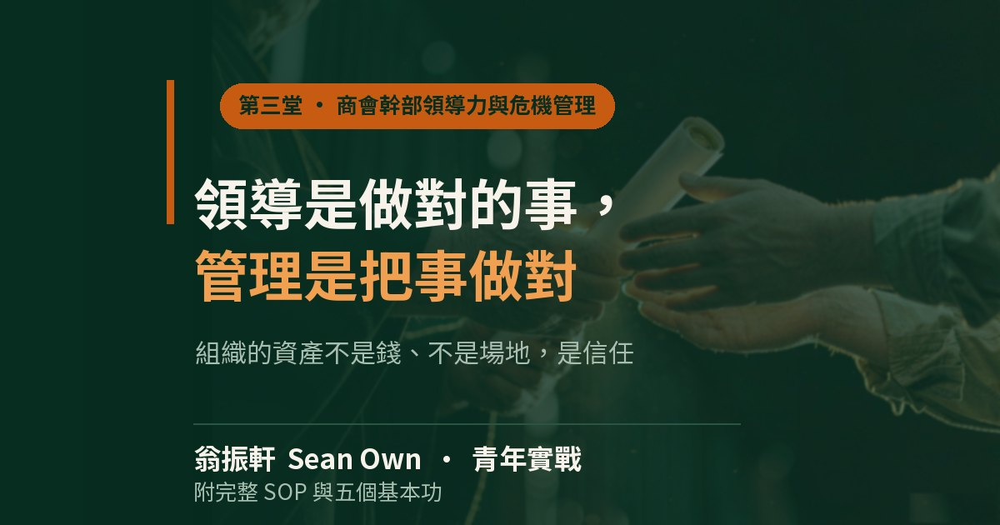

領導是做對的事，管理是把事做對
第三堂 · 商會幹部領導力與危機管理｜從做對的事到交出位置
一、商會不是只辦活動的很多商會的幹事，一年做完幾場活動、發幾十封會訊，年底算一算覺得該做的都做了，但隔年開會的時候，會員人數沒有長、新企業沒有進來、沒有人主動聯絡你。問題不在辦不辦活動，而在商會到底在做什麼。商會的本質不…

KEY POINTS
本堂重點（三句話）
- 領導是做對的事，管理是把事做對——但商會的權力來源是人心，不是職位。
- 組織的資產不是錢、不是場地，是信任；危機時提領的就是你當初存進去的。
- 真正的傳承不是交位置，是把經驗、信任、責任一起交出去。
以下三句話是整堂課的骨架；正文把它們拆開講，附錄則是可以直接印出來貼在會議室牆上的操作手冊。
一、商會不是只辦活動的
很多商會的幹事，一年做完幾場活動、發幾十封會訊，年底算一算覺得該做的都做了，但隔年開會的時候，會員人數沒有長、新企業沒有進來、沒有人主動聯絡你。
問題不在辦不辦活動，而在商會到底在做什麼。
商會的本質不是「辦活動的機構」，而是「替會員解決問題的機構」，而這兩件事的差別一句話就可以講清楚：辦活動是把人聚集起來，解決問題是把人的問題接住。
我在這個圈子裡待了二十多年，看過太多商會把「活動辦完」當成「任務完成」，但辦完之後呢？會員記得什麼、下一年他們還會不會來，這些才是真正要問的。
所以海外商會的領導經驗裡，有一句話我聽過之後一直記著：沒人知道的活動，等於沒發生過。 不是說活動要轟轟烈烈，而是說你做的東西必須要讓別人看見、讓別人記得，否則它對組織沒有留下任何東西。
這一期談領導力與危機管理，但我故意從這裡開始，因為只有先想清楚商會存在的理由，後面那些方法才有意義。
二、領導是做對的事，管理是把事做對
先講一個很多人搞混的區分：領導是做對的事，管理是把事做對。
領導看的是方向——這件事該不該做、值不值得做；管理看的是執行，這件事怎麼做才有效率。做對的事如果用錯方法，只是壞得慢一點；把事做對如果方向錯了，等於用高速公路通往錯誤的目的地。
| 領導 | 管理 | |
|---|---|---|
| 方向 | 做對的事 | 把事做對 |
| 關注 | 願景、共識、動機 | 流程、SOP、效率 |
| 看的是 | 梯子有沒有靠對牆 | 多快爬上梯子 |
| 權力來源 | 人心、信任、人格 | 職位、制度、獎懲 |
這張表我認為最重要的一行是「權力來源」，因為它決定了這個組織能走多遠。
因為商會這個組織，權力來源跟公司很不一樣。公司的員工沒有選擇，他得靠你的職位；商會的會員有選擇，他可以不續會、可以退會。 會員沒有絕對隸屬，靠的是影響力，不是職位。
這就意味著，職位賦予你的是權力，但只有責任才能贏得信任。
三、組織的資產不是錢，也不是場地，是信任
如果一個組織要倒，最先倒的不是財務，是信任。
信任這件事很像銀行的帳戶——你每一次誠實承擔、每一次說到做到，都是在往裡面存錢；危機的時候，你要的不是新存款，是你當初存進去的那些。
平時沒有人會感謝你存錢，但出事那天你就知道裡面有多少。
所以領導力的三個基本功，我覺得分開來講，而且順序不能顛倒——方向不清楚，後面兩個做得再好也只是在錯誤的路上跑得更快。
第一個是形塑方向，不是喊口號，是要具體到年度行動——我們是誰、服務誰、創造什麼價值，這三個問題答不出來，願景就是空的。
第二個是建立信任帳戶，這是累積的，不是臨時的。
第三個是承擔勇氣，這個最難：有功往下分，有錯自己扛。 很多團隊垮掉，不是因為能力不夠，是因為出事時沒有人願意站出來。
四、衝突不是問題，迴避衝突才是
商會的幹部工作，做的不是沒有衝突的事，而是有衝突的事。
會員之間有利益落差，各部門之間有資源爭議，理事之間有理念分歧——這些躲不掉的。
但我發現，很多衝突之所以變成事故，不是因為意見不同，而是因為迴避了。
處理衝突有三步，不要跳：先找共同目標，不是問「你要什麼」，而是問「我們今天要一起達成什麼」；這一句話能把對話從「你對我錯」拉回到「我們」。
再確認立場，你的需求是什麼、他的需求是什麼，很多時候你會發現兩個人多半都是好意。
最後形成協議，這裡有一個很重要的觀念：不要求人人滿意，但求人人能接受。
這就是半條麵包哲學：沒有共識但能接受，就先往前，因為組織不是要在每一件事上達成完美共識，而是要在多數件事上保持往前走；如果今天每一件事都要等到所有人都滿意才動，整個組織會癱瘓。
五、優秀人才不等於團隊
商會最不缺的是人才，最缺的反而是團隊，而這兩件事差別很大。
交響樂團不是每個人都獨奏，因為每個人都很強，而沒有人的強，是建立在別人襯托上。
所以商會要產生化學反應，要讓 1+1 大於 2，方法只有一個：讓每個人輪流當領導者。
這就是雁隊理論的應用——飛雁隊形之所以能飛得那麼遠，不是因為頭雁飛得快，是因為後面的雁在頭雁累的時候頂上去。機會留給準備好的人，這是唯一公平的傳承方式。
而組織最大的風險，我認為不是沒人做事，是熱心但沒方向。
一屋子熱心的人，沒有方向，比沒有人更危險，因為他們會很努力地把事情做錯。
5.1 對老幹部的回饋怎麼講
這是實戰上最常遇到的問題：資深幹部做錯了，你怎麼講。
這幾年我自己處理過幾次這種情況，累積出一個很好用的方法，叫 SBI，也就是把「情境、行為、影響」三段講清楚：S，Situation，情境：「昨天開會的時候」
B，Behavior，行為：「你沒有準備詳細資料」
I，Impact，影響：「導致大家不了解狀況，討論失準」
不要說「你這個人怎麼都不準備」，要說情境、行為、影響。
這兩種說法的差別在哪裡？前者是在評價人，後者是在描述事情，而評價人會讓人防衛，只有描述事情才能讓人改進。
六、順境看 IQ，逆境看 AQ
領導者要有多種商數，我把它們整理在這裡。這六個詞都是英文縮寫，分別是智商（IQ）、情商（EQ）、社交商數（SQ）、逆境商數（AQ）、創造力商數（CQ）與道德商數（MQ）。
| 商數 | 英文全名 | 意思 | 何時用 |
|---|---|---|---|
| IQ | Intelligence Quotient | 專業能力 | 平時、順境 |
| EQ | Emotional Quotient | 情緒管理 | 人際、壓力 |
| SQ | Social Quotient | 人際關係 | 跨部門、跨文化 |
| AQ | Adversity Quotient | 逆境商數 | 危機、突發 |
| CQ | Creativity Quotient | 創造力 | 轉型、創新 |
| MQ | Moral Quotient | 道德商數 | 底線、原則 |
但對一個要帶組織的人來說，我認為順境看 IQ，逆境看 AQ 這一句最關鍵。
為什麼？因為順境的時候，資源多、空間大、容錯率高，IQ 高的人就能做出成績。逆境不一樣，逆境裡考的不是你能不能想出辦法，是你能不能在沒有資源、沒有人理解的時候，還把事情扛住。
很多很聰明的人做不長，原因就在這裡：他們的能力是在順境裡被篩選出來的，所以從來沒有被訓練過如何處理沒有資源的狀況，一旦遇到瓶頸就會本能地想換環境，而不是想辦法把事情扛下來。
七、危機管理：五個心加一個偵測
危機管理的 SOP 三段很清楚：事前預防、事頭應變、事後復原。
事前要做風險辨識、預案演練、指揮系統就位，這些大家都知道要做，重點在「事頭」。
事頭我記住的是五個心加一個偵測：關懷 Compassion：先關心受傷的人再講真相，順序不能反，先講真相會被認為冷血。
承諾 Commitment：道歉要具體——誰負責、什麼時候改善、如何避免再發，「我們很遺憾」這句話等於沒說。
可信 Credibility：不要講漂亮話，也不要說「無可奉告」，因為無可奉告會被媒體解讀成有事。
清楚一致：前後口徑一致，不能兩套說法，這是最容易被忽略的——第一天說一套、第二天改一套，傷害比第一天就說錯更大。
連續 Continued：持續對外更新，不要失聲。
再加一個 Detect 偵測：先搞清楚到底發生什麼。
7.1 危機發言人鐵律
媒體永遠比你早到，這是要有心理準備的，不要指望第一時間是你第一個知道，所以寧可先準備好一份可以馬上發的說法，也不要等電話響了才開始想。
所以第一時間要指定單一發言窗口，不能各說各話。
而最關鍵的一句是：問題界定錯了，用正確方法解決錯誤問題，是第三類錯誤。
第一類錯誤是問題判斷對、方法錯，第二類是問題判斷錯、方法對，第三類最麻煩——問題判斷錯、方法還錯，但整套流程看起來很順，因為你在用最專業的態度，解決一個根本不存在的問題。
所以先偵測，再回應，這一點沒有例外；最後一條是：道歉要及時，在對方還在意的時候道歉，等事情都過了才道歉那沒有用，因為那不是道歉，是在自己找台階。
八、人走茶涼是正常的，要習慣
這一節我想講幾件比較殘酷但很真實的事，商會裡每個人都有任期，職位會換，人會走，人走茶涼是正常的，要習慣。
很多幹部對這件事感冒，覺得自己付出很多卻沒人記得。但我要說，這不是商會特有的問題，這是所有組織的問題。
真正要問的問題是：你留下的到底是做過多少活動，還是帶出了多少人、串起了多少力量？
會長的定位我認為很清楚：做平台，不做主角。
平台的意思是，你不是站在台上被看的那個人，而是讓別人都有機會站上去的那個結構；這個心態很難，因為做平台沒有掌聲，做主角有掌聲，做平台只有「事情成了」這一個回報。
九、青年傳承不是交位置
傳承這件事，商會最容易做錯的方式，就是把傳承等同於「交出位置」。
真正的傳承不是交位置，是把經驗、信任、責任一起交出去。
三樣東西裡面，位置最不值錢，因為下一任本來就有位置。真正要交的是經驗和信任，而信任交出去最快的方法，是讓對方真的去做一件事。
所以正確的順序是：先讓年輕人完成一件小事，並且允許他們犯錯。
這一點尤其關鍵，因為很多商會的青年幹部不是不肯做，是不敢做——前面幾任做得太完美，後面的人怎麼做都像在退步。
允許犯錯不是鬆散，而是給成長留空間；而讓年輕人被看見、被信任，比任何制度都重要。
固定的編制——二代聯盟、ESG 聯盟、親子活動——不要只靠老一輩撐，因為老一輩會老。
十、會員為什麼留下來
商會最實際的一個問題是：會員為什麼留下來？
答案很簡單：被需要、看見價值、有參與感。
這三個詞，缺一個都留不住人：被需要，是有人會想到你、會找你幫忙，那種被當作資源的感覺，比被當作裝飾好。
看見價值，是會員能說出「我在這個商會得到了什麼」，如果他說不出來，那他就是在免費出席。
參與感，是決策的時候他有份，不是執行完才知道。
而招募與交流，最要緊的一句是：交流不是換名片。
換名片是一個人給另一個人名片，交流是把每次見面變成「可以一起做事的關係」。前者只是蒐集名片，後者才是真正在累積關係。
還有一件容易被忽略的事：新會員要主動關懷，不要晾在那。 很多商會的入會儀式辦得很熱鬧，然後人就散了。
十一、危機裡才看見一個組織的樣子
急難救助這件事，最能看出一個商會真正的品質。
災害發生時，僑社的速度與溫度，就是受災者最大的依靠。
這個「速度與溫度」，我覺得就是前面講的所有東西的總和：領導力、溝通、執行力、還有人心。
具體做法不複雜，但要有紀律：第一時間成立應變小組，跟大使、跟政府、跟其他僑團同步。這一句「同步」很關鍵，一個團隊單獨行動，資源調不動，而且容易出現資訊落差。
然後是募款、慰問金、物資、後續關懷，要做就一次做到位。
很多商會的問題不是不熱心，是只做了第一步——募了款、發了第一批物資，然後熱情就淡了。受災者最需要的，其實是後面那幾個月的持續關懷。
附錄：商會幹部領導力與危機管理 SOP
一、領導與管理的分野
| 領導（Leadership） | 管理（Management） | |
|---|---|---|
| 方向 | 做對的事 | 把事做對 |
| 關注 | 願景、共識、動機 | 流程、SOP、效率 |
| 看的是 | 梯子有沒有靠對牆 | 多快爬上梯子 |
| 權力來源 | 人心、信任、人格 | 職位、制度、獎懲 |
二、領導力三個基本功
| 基本功 | 內容 |
|---|---|
| 形塑方向 | 清楚說明「我們是誰、服務誰、創造什麼價值」，具體到年度行動 |
| 建立信任帳戶 | 每次誠實承擔、說到做到都在存錢，危機時提領的就是這個 |
| 承擔勇氣 | 有功往下分，有錯自己扛 |
三、幹部五種能力
| 能力 | 要點 |
|---|---|
| 塑造方向 | 目標要具體、可衡量、有人負責、有時間表 |
| 溝通傾聽 | 完整式聽，不是過濾式聽；跨文化要確認用詞 |
| 授權分工 | 說清楚做什麼、為什麼、誰負責、何時回報；交出去要追蹤 |
| 衝突處理 | 先安撫人再談事，對事不對人，回到共同目標 |
| 判斷決策 | 做與不做都是決策；考慮實力、利益、可行性、風險、責任 |
跨文化用詞提醒：「窩心」在台語是「噁心」、在國語是「貼心」，差一點就出大事。
四、SBI 回饋法
| 層次 | 內容 | 示例 |
|---|---|---|
| S｜Situation | 情境 | 昨天開會的時候 |
| B｜Behavior | 行為 | 你沒有準備詳細資料 |
| I｜Impact | 影響 | 導致大家不了解狀況，討論失準 |
不要說「你這個人怎麼都不準備」，要說情境＋行為＋影響。
五、衝突處理三步
| 步驟 | 核心問題 |
|---|---|
| 一、找共同目標 | 今天大家要一起達成什麼？ |
| 二、確認立場 | 你的需求是什麼？他的需求是什麼？ |
| 三、形成協議 | 不要求人人滿意，但求人人能接受 |
六、領導者六種商數
| 商數 | 英文全名 | 意思 | 何時用 |
|---|---|---|---|
| IQ | Intelligence Quotient | 專業能力 | 平時、順境 |
| EQ | Emotional Quotient | 情緒管理 | 人際、壓力 |
| SQ | Social Quotient | 人際關係 | 跨部門、跨文化 |
| AQ | Adversity Quotient | 逆境商數 | 危機、突發 |
| CQ | Creativity Quotient | 創造力 | 轉型、創新 |
| MQ | Moral Quotient | 道德商數 | 底線、原則 |
七、危機管理 SOP
| 階段 | 核心動作 |
|---|---|
| 事前 | 風險辨識、預案演練、指揮系統就位 |
| 事頭 | 五個心＋Detect 偵測 |
| 事後 | 重建信任帳戶、檢討流程補進 SOP、對外說明改進 |
八、事頭五個心 ＋ 一個偵測
| 名稱 | 內容 |
|---|---|
| 關懷 Compassion | 先關心受傷的人，再講真相 |
| 承諾 Commitment | 道歉要具體：誰負責、何時改善、如何避免再發 |
| 可信 Credibility | 不講漂亮話，不說「無可奉告」 |
| 清楚一致 | 前後口徑一致，不能兩套說法 |
| 連續 Continued | 持續對外更新，不要失聲 |
| Detect 偵測 | 先搞清楚到底發生什麼 |
九、危機發言人鐵律
| 鐵律 | 說明 |
|---|---|
| 媒體永遠比你早到 | 要有心理準備 |
| 單一發言窗口 | 第一時間指定，不能各說各話 |
| 先偵測再回應 | 問題界定錯了，用正確方法解決錯誤問題，是第三類錯誤 |
| 道歉要及時 | 在對方還在意的時候道歉；事後道歉沒有用 |
十、辦活動的三個成功要素
| 要素 | 核心問題 |
|---|---|
| 內容 | 參加者記得什麼？ |
| 流程 | 每個環節接得上嗎？ |
| 人 | 誰是主角？誰是關鍵人物？誰要保護？ |
十一、會員留下來的三個理由
| 理由 | 說明 |
|---|---|
| 被需要 | 有人會想到你、找你幫忙 |
| 看見價值 | 會員能說出「我得到了什麼」 |
| 參與感 | 決策的時候他有份，不是執行完才知道 |
十二、幾句值得記下來的話
領導是做對的事，管理是把事做對。
職位賦予權力，責任才能贏得信任。
組織的資產不是錢、不是場地，是信任。
半條麵包哲學：沒有共識，但能接受，就先往前。
組織最大風險不是沒人做事，是熱心但沒方向。
順境看 IQ，逆境看 AQ。
優秀人才不等於團隊，交響樂團不是每個人都獨奏。
問題界定錯了，用正確方法解決錯誤問題，是第三類錯誤。
沒人知道的活動，等於沒發生過。
人走茶涼是正常的，要習慣。
交流不是換名片，是把每次見面變成可以一起做事的關係。
熱忱可以感動人，服務可以影響人。